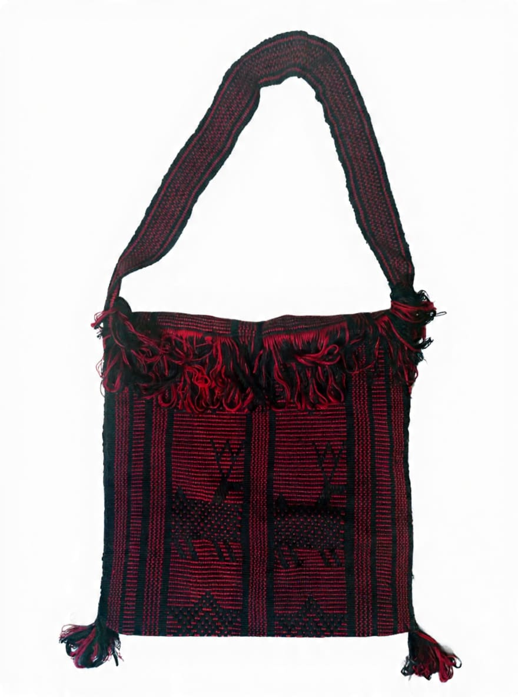
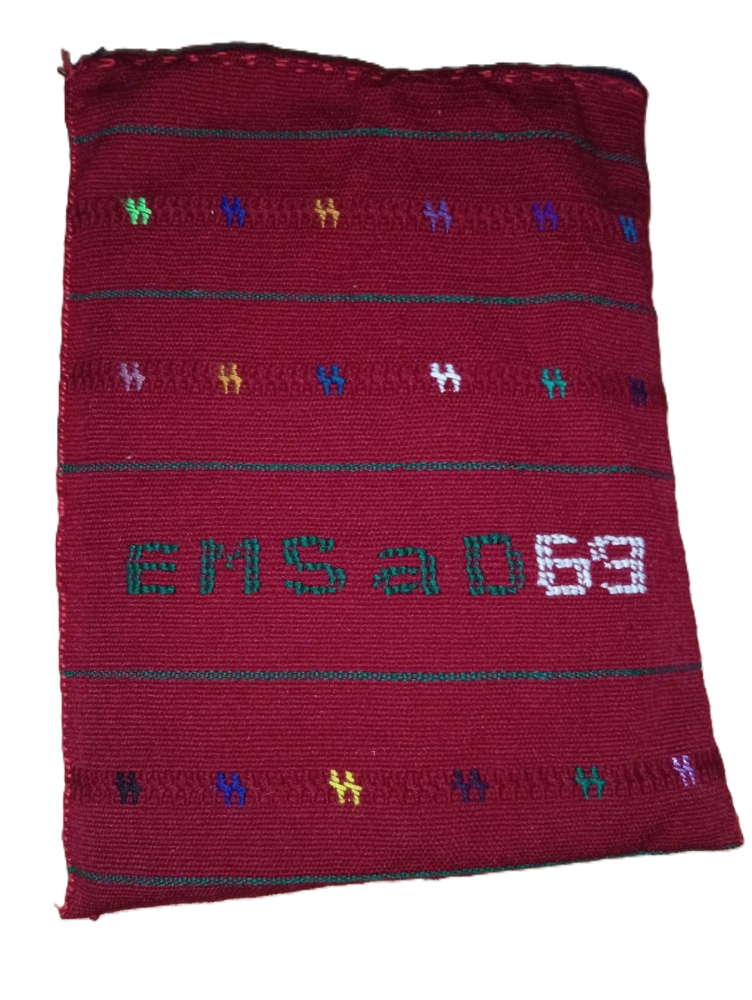
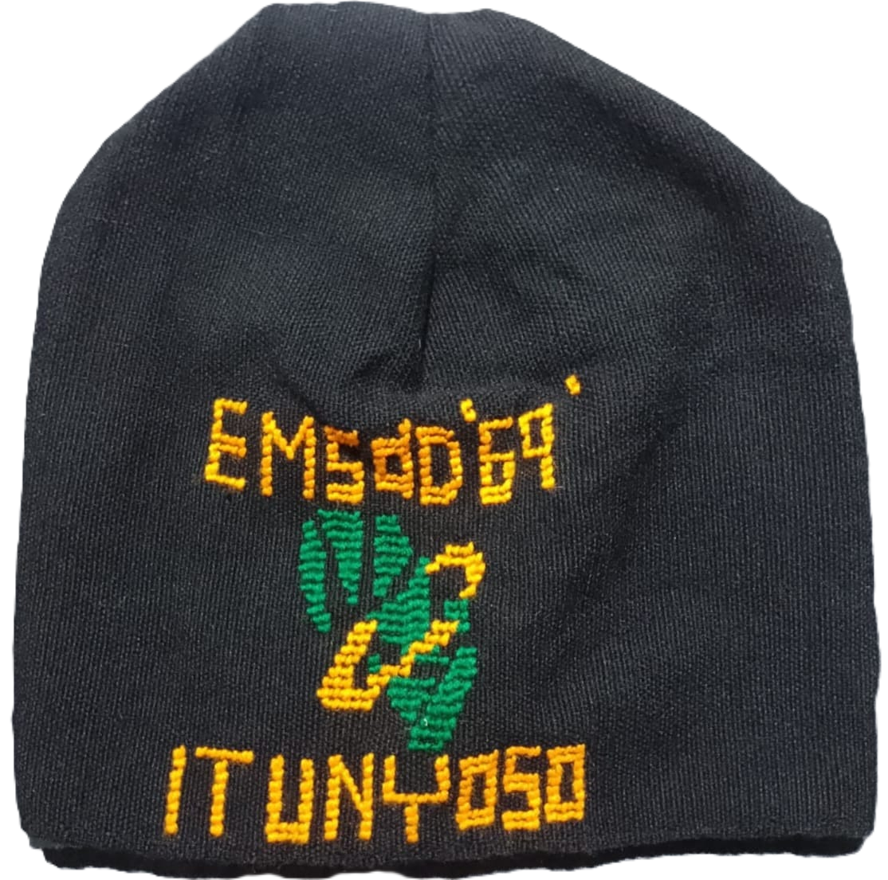
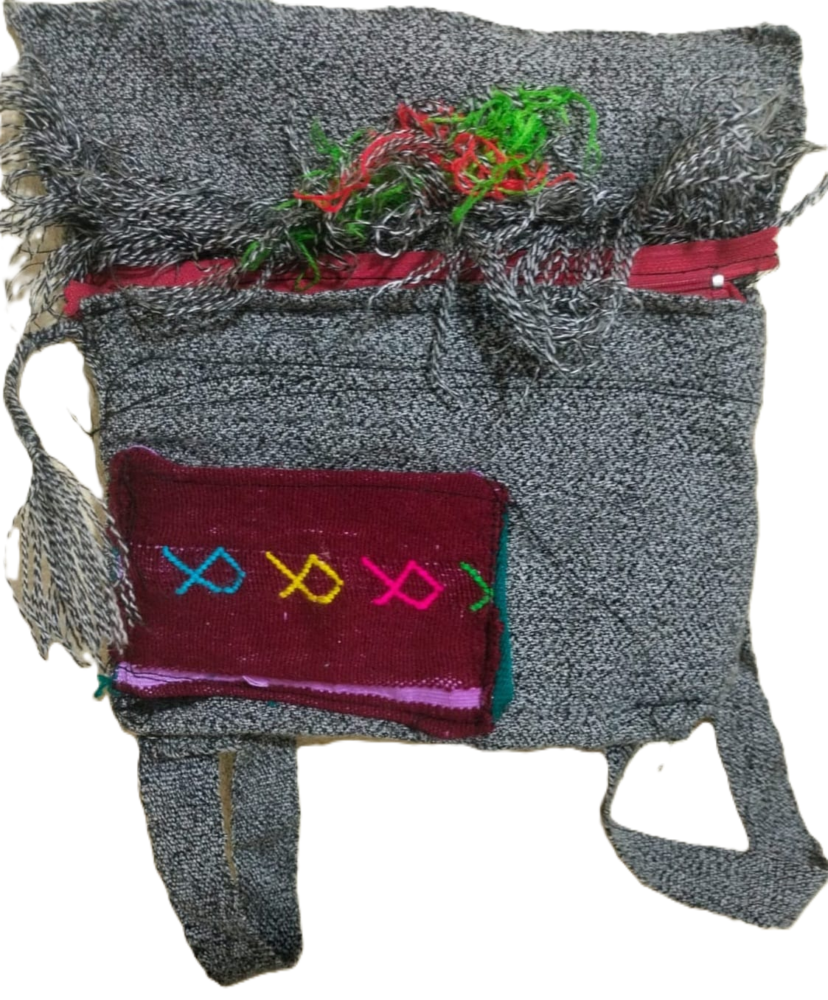
BOLSA(MORRAL)
Este morral fue hecho con tejido sencillo
100% a mano.Combina con el color rojo y
negro,y presenta figuras geomètricas que
representan al venado y a las estrellas.
FUNDA PARA LAPTOP
Este morral fue hecho con tejido moderno100% a
mano.Combina con el color vino y del bordado
negro,que presenta figuras geométricas que
representa (chavíí mííh)mariposa y el nombre del
instituto que está tejído de color verde y blanco.
GORRO
Este gorro está hecho 100% a mano con tejido
moderno.Combina con el color negro
y se incluye el nombre del instituto que está
tejído de color anaranjado y verde.
MOCHILA PEQUEÑA
Esta mochila pequeña está hecho con tejido sencillo
100% a mano.Combina con el color gris y de su
cierre un color vino que igual manera conlleva
un tejído del huipil que contiene
figuras geométricas como la cola de pescado.
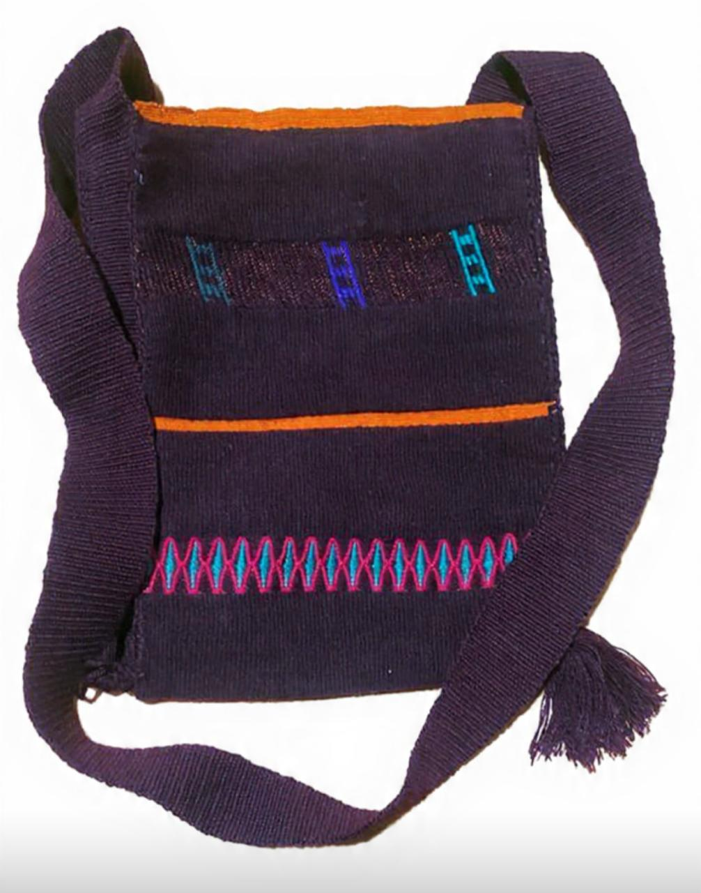
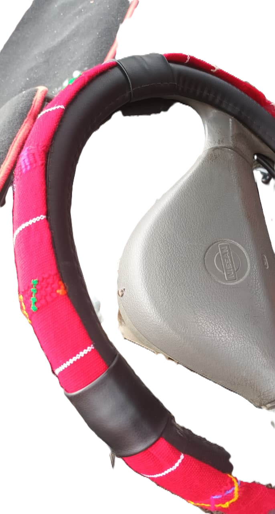

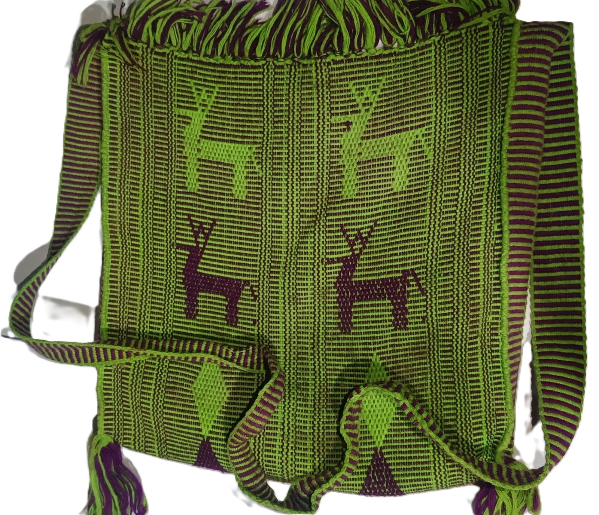
BOLSA CRUZADA
Este morral es hecho contejido moderno 100% a
mano.Lo que combina es que conlleva el color
morado y anaranjado en sus bordes.
Junto con ello se destacan las figuras
geométricas como la escalera y la mariposa de
rombo.
FUNDA PARA VOLANTE DEL
CARRO
Este funda para el volante es hecho con tejido
sencillo 100% a mano.Su combinación conlleva el
color rojo ,y blanco en sus bordes.También con-
lleva figuras geométricas como la mariposa de
hoja de mazorca y mariposa de chicahuaxtla.
LAPICERA
Esta lapícera es hecho con tejido sencillo100% a
mano.Su combinación conlleva el color rojo y
blanco en sus bordes.Junto con ello lleva figuras
geométricas como las escaleras y pajáros.
BOLSA(MORRAL)
Este morral está hecho con tejido sencillo100% a
mano.Combina con el color verde y sus bordes
de negro que conlleva figuras geométricas como el
venado y mariposa de rombo.

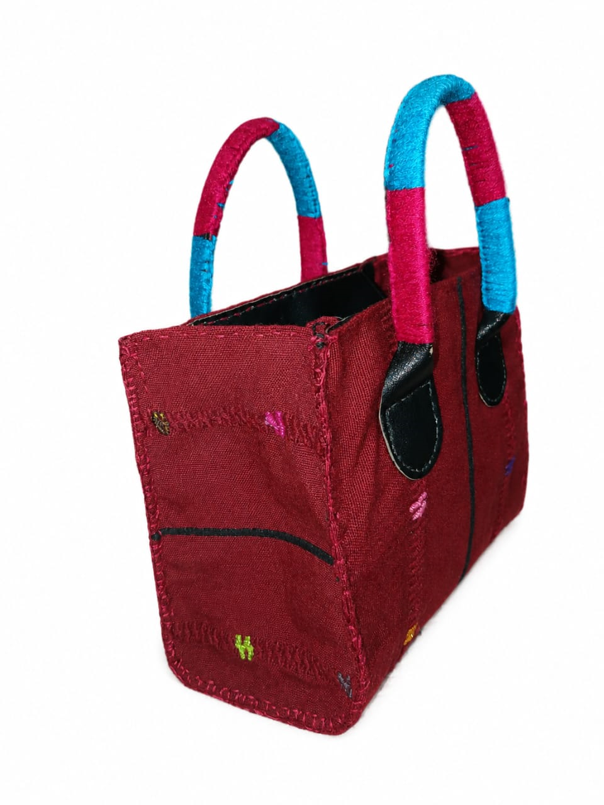
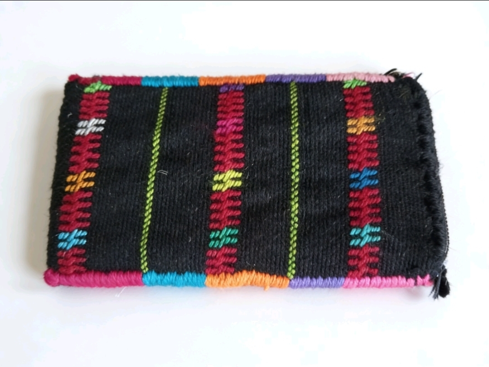
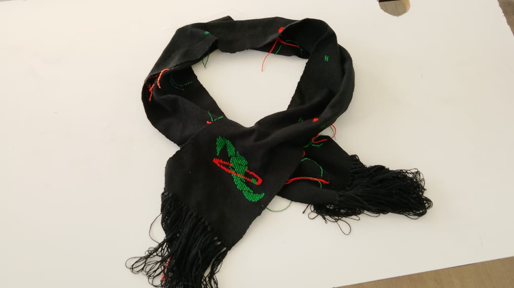
FUNDA PARA LAPTOP
Esta funda de laptop es hecho con tejido
moderno 100% a mano. Lo que combina es el
color rojo y negro de los bordes.Igual manera
lleva figuras geométricas como las
mariposas,los patos y personas.
BOLSA CRUZADA
Esta bolsa es hecho con tejido moderno 100% a
mano.Combina con el color rojo fuerte y negro en
los bordes.También conlleva figuras geométricas
como la mariposa de hoja de mazorca.
FUNDA PARA CELULAR
Este monedero es hecho con tejido sencillo 100% a
mano. Combina con el color negro y verde de los
bordes.Conlleva figuras geométricas como la
mariposa de hoja de mazorca junto con bordados
en las orillas de colores como
son:rosa,anaranjado,azul,y morado.
BUFANDA
Esta bufanda es hecho con tejido moderno100% a
mano.Combina con el color negro y conlleva figura
geométrica comoel logo del CECYTE y mariposa de
hoja de mazorca.
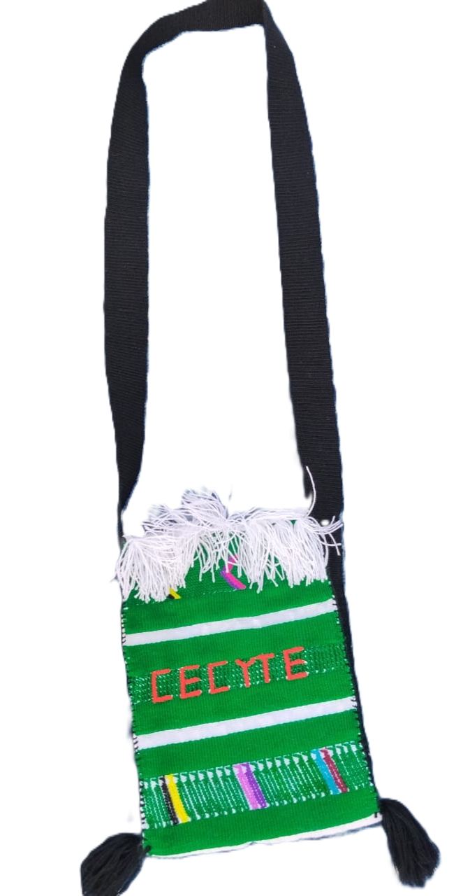
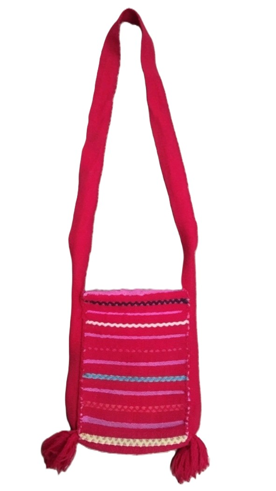
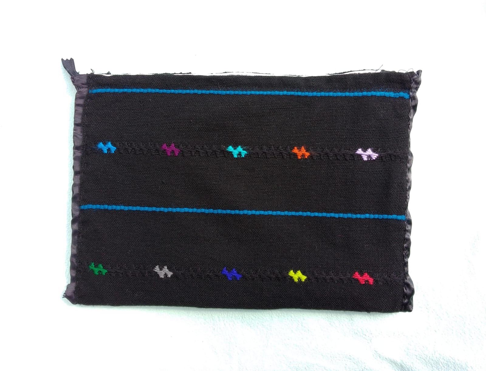
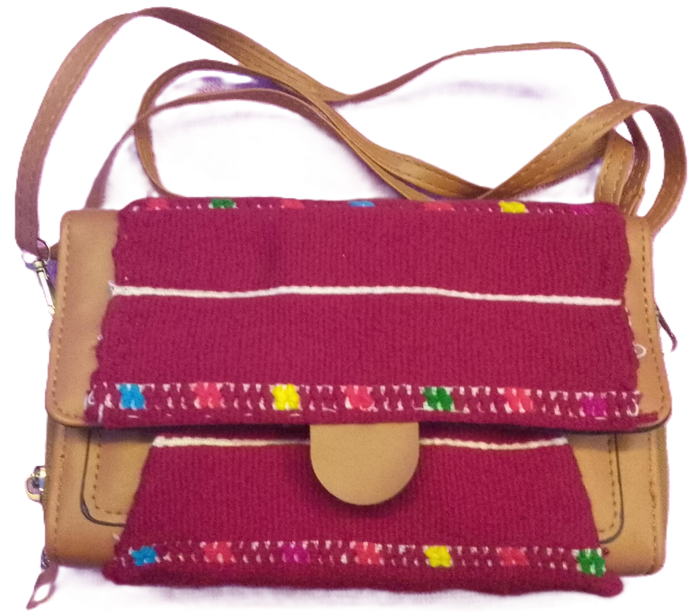
BOLSA(MORRAL)
Este morral es hecho con tejido moderno
100% a mano.Está combinado
con el color verde y blanco de los bordes y
negroel asa de la mano.Conlleva figuras
geométricascomo los pajáros y el nombre del
instituto de color anaranjado.
BOLSA PARA CELULAR
Este morral es hecho con tejido sencillo 100% a
mano.Está combinado con el color rojo.
Conlleva figuras geométricas como rombos y
estrellas.
ESTUCHE DE LAPTOP
Este estuche es hecho con tejido moderno 100% a
mano.Conlleva el color negro color negro que es el
principal y azul de los bordes.Conlleva figuras
geométricas como la mariposa de hoja de
mazorca,junto con un cierre de color negro.
BOLSA CRUZADA
Esta bolsa es hecho con tejido moderno 100%
a mano.Está combinado con el color rojo con blanco
en los bordes.Conlleva figuras geométricas como la
mariposa de hoja de mazorca.